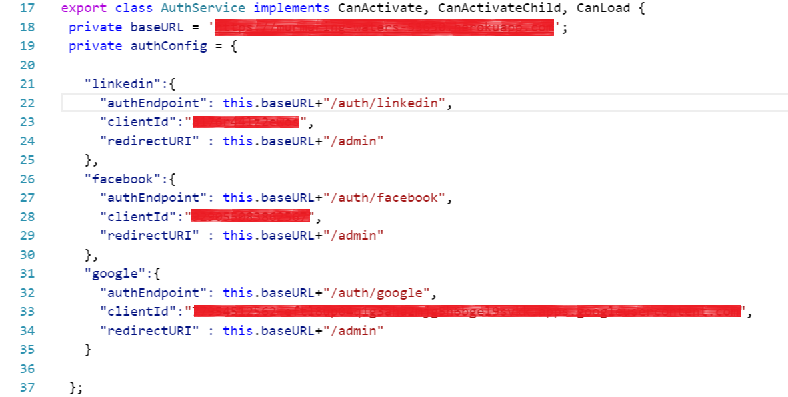
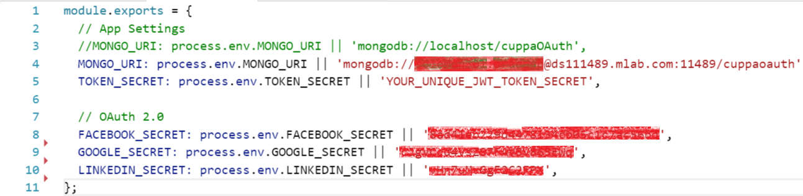
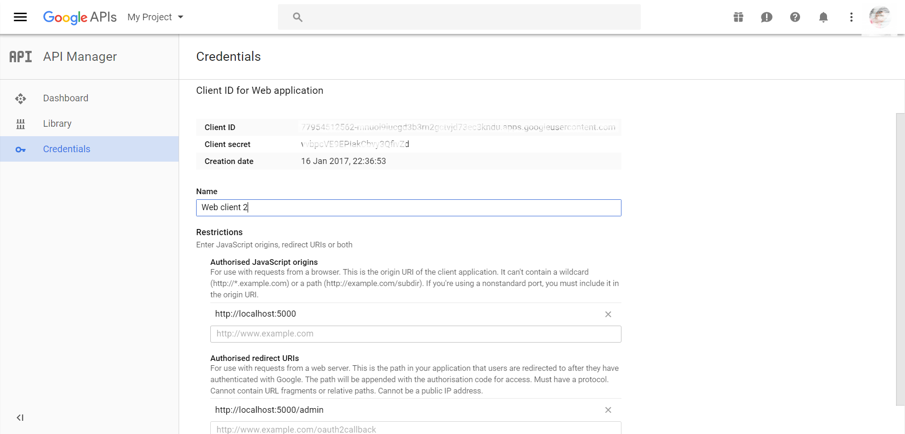
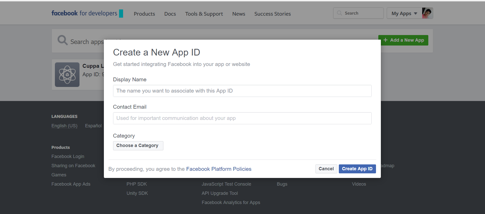
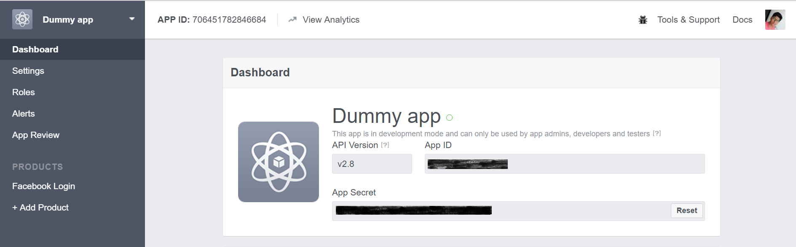
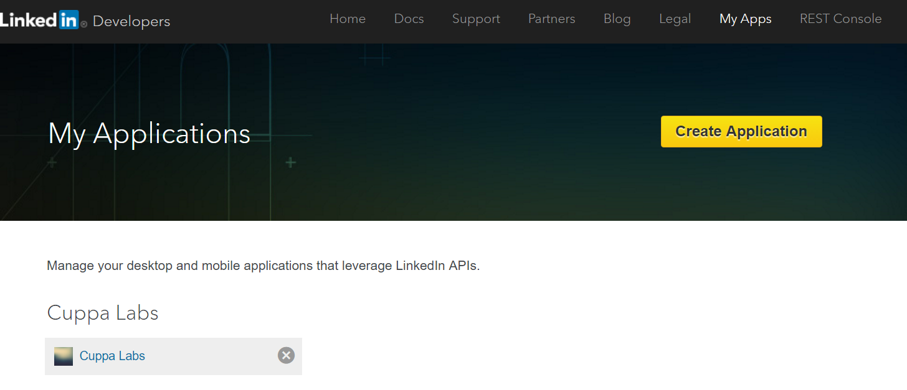
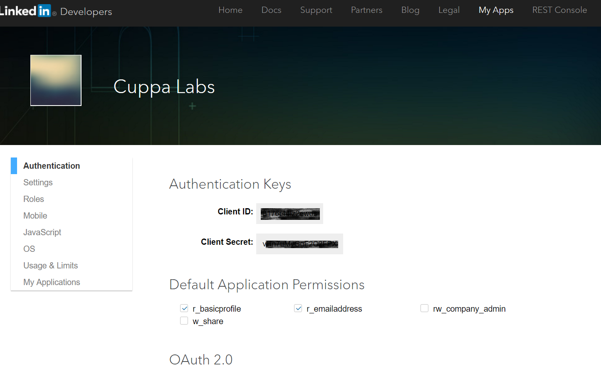

It is often required that, a user register's or sign up to login to a particular website or application. It is a tedious job to fill those long forms with user basic details. To avoid filling long forms, Cuppa Angular 2 OAuth provides a module to login using social OAuth services like google OAtuh, Facebook OAuth and LinkedIn OAuth. Using this your application will be able to recieve basic details of the user from social networking sites and you can store in your application environment.
To get started using the Cuppa OAuth Social Login, the following pre requisites needs to be met with. 1) Knowledge of Angular 2 and latest Angular 2 version. Refer Setup AngularJS 2) Knowledge of NodeJS and latest version installed in your environment. Refer Setup NodeJS 3) Installed MongoDB and knowledge of setting up. Refer Setup MongoDB 4) Set up Angular Client, App Server(your node server), Mongo DB.
Follow the steps to install the Cuppa OAuthcode in your environment. 1) Clone https://github.com/CuppaLabs/angular2-social-login.git repository from github. 2) $ npm install - To install all the dependencies 3) $ npm run auth-server - To start the server (Run only when the entire application is setup).
To configure angular, the urls need to be changed to your environment url endpoints. 1) Go to src/app/auth.service.ts 2) Replace the baseURL with your endpoint(http://localhost:500, to run locally), as shown in the below snippet 3) Create your social app with Google/Facebook/LinkedIn and get you client ID 4) Replace the Client ID in the authConfig Object as shown below in the snippet.(blurred area) 4) redirectURI - the redirect url configured in the social networking app which redirects to your page on that URL, on successful login 5) authEndpoint - Your application server endpoint where it hits for authentication. 
To configure Node Server, follow the below steps 1) Go to /auth-config.js 2) Create your social app with Google/Facebook/LinkedIn and get the client secret. 3) Replace the client secret with your app's client secret as show in the below snippet. (Blurred my credentials). Place your credentials there. 
To configure Node Server with mongo DB details, follow the below steps 1) Install Mongo DB locally and start or deploy on any cloud platform 2) Go to /auth-config.js 3) Replace the username, password, mongo url and DB name. Form the url as follows and replcae as shown in the below snippet.
Ahh !!! Now you are ready to make your app up and running. 1) Start MongoDB Server 2) $ npm run build 3) $ npm run auth-server 4) Visit http://localhost:5000 to access your app running in your local. This should be the baseURL you configured in the angular configuration section. Deploy to your application server or any cloud platform.
1) Visit Google API Console 2) Go to "Credentials" tab. 3) Select "OAuth Client ID"" from "Create credentials"" tab. 4) Select "web application"" option. 5) Provide your application name, URL of your app origin and redirect URL and Click Create. 6) On creating successfully, you will see the following screen with client ID and client secret. 
1) Visit Facebook Apps 2) Click "Add a New App" button.Fill the details and click "Create ID"  3) Select "Facebook Login" from product list and click "Get Started" 4) Provide redirect URL. 6) On creating successfully, you will see the following screen with client ID and client secret. 
1) Visit LinkedIn Apps 2) Click "Create Application" button.Fill the details and click "Create"  6) On creating successfully, you will see the following screen with client ID and client secret. 